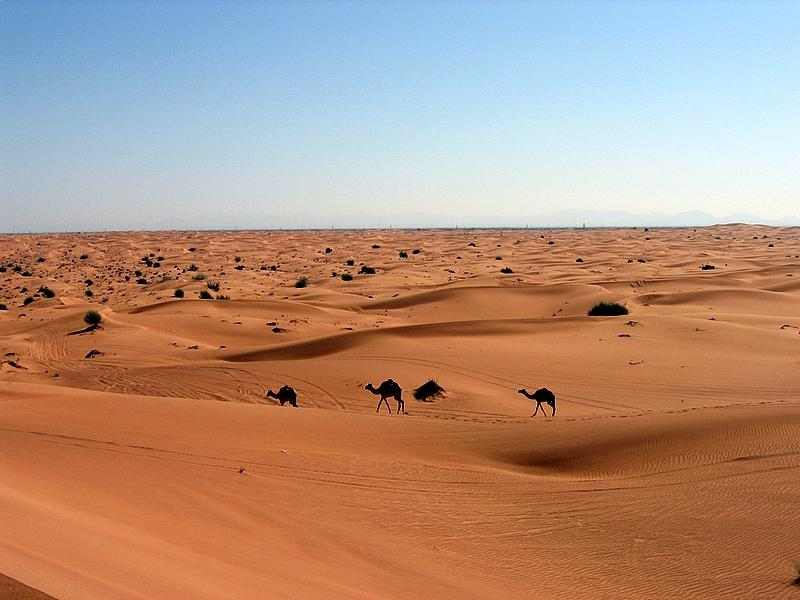
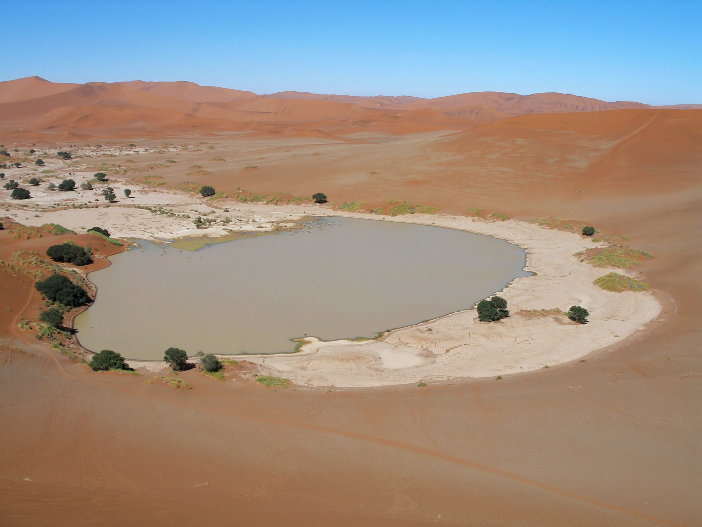
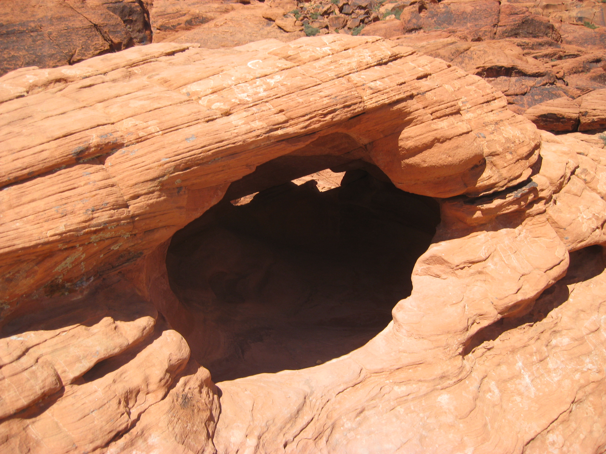
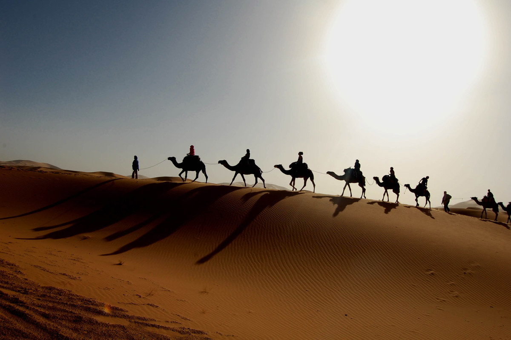

|  | Στη Γη υπάρχουν μεγάλες αφιλόξενες άνυδρες εκτάσεις που ονομάζονται έρημοι. Καλύπτουν το 1/3 της ξηράς και εκτείνονται κατα μήκος των Τροπικών του Αιγόκερω και του Καρκίνου μεταξύ 20ο και 35ο τόσο στα βόρεια, όσο και στα νότια γεωγραφικά πλάτη. |
| Οι έρημοι δεν είναι όλες αμμώδεις, αλλά έχει και ερήμους με βράχια και χαλίκια, οι επονομαζόμενες βραχώδεις. Υπάρχουν θερμές έρημοι αλλά και ψυχρές. Στις θερμές ερήμους η θερμοκρασία αγγίζει τους 45 °C ή και υψηλότερα κατά τη διάρκεια της ημέρας το καλοκαίρι και πέφτει ως και τους 0 °C βαθμούς ή και χαμηλότερα το χειμώνα. Οι ψυχρές έρημοι, που είναι επίσης γνωστές ως πολικές έρημοι, έχουν παρόμοια χαρακτηριστικά με τις θερμές, με μόνη διαφορά ότι πέφτει χιόνι αντί της βροχής. Χαρακτηρίζονται όλες από μεγάλη και έντονη ξηρασία, αφού οι βροχοπτώσεις είναι ελάχιστες. Το ίδιο ανάλογα "φτωχή" είναι και η χλωρίδα με την πανίδα αφού αυτές καθορίζονται κυρίως από τις βροχοπτώσεις. | |
| Διαβάστε περισσότερα... |
|  | Νερό: Στην έρημο είναι επιτακτική η ανάγκη εξεύρεσης νερού άμεσα, διαφορετικά ο οποιοσδήποτε θα πεθάνει ανεξάρτητα από το πόσο άφθονοι είναι οι λοιποί πόροι επιβίωσης του. Η αφυδάτωση επέρχεται με αργό ρυθμό, όταν το σώμα ΄χανει υγρά γρηγορότερα από την αναπλήρωση τους. Κατά μέσο όρο, ένας κανονικός οργανισμός ενήλικα θα αρχίσει μια φθίνουσα πορεία μετά από τέσσερις μέρες, με τον θάνατο να επέρχεται μέσα στην πρώτη εβδομάδα, αν μείνει τελείως χωρίς νερό. |
| Τροφή: Η τροφή δεν αποτελεί προτεραιότητα για την επιβίωση στην έρημο. Πράγματι, αν το νερό είναι περιορισμένο, είναι προτιμότερο να μην πάρετε καθόλου τροφή, εώς ότου βρείτε νερό. Η λήψη τροφής είναι ένας μακροπρόθεσμος παράγοντας επιβίωσης, αλλά και τότε ακόμη συνιστάται, όπου είναι δυνατό, να τρώτε φυτά που περιέχουν υγρά. | |
| Διαβάστε περισσότερα... |
|  | Οι περιπτώσεις οι οποίες συνηθέστερα οδηγούν σε μια κατάσταση επιβίωσης, συνδέονται με ένα ατύχημα μεταφορικού μέσου - αεροπλάνου ή οχήματος. Τα υπάρχοντα στη φύση υλικά για την κατασκευή ενός καταφυγίου περιορίζονται συνήθως στις πέτρες και την άμμο. Ενδεικτικά: |
|
|
| Διαβάστε περισσότερα... |
|  | Παρά τα όσα συνιστούν πολλά εγχειρίδια επιβίωσης, οι μετακινήσεις στην έρημο κατά την νύχτα δεν είναι περισσότερο επικίνδυνες από τις μετακινήσεις κατά την ημέρα. Η φυσική προσπάθεια που καταβάλλετε όταν κινείστε σας βοηθαέι να διατηρείστε ζεστοί και αντίστροφα το κρύο εμποδίζει την απώλεια υγρών του σώματος. |
| Η ορατότητα κατά την νύχτα συνήθως είναι καλή, με την σελήνη και τα αστέρια να παρέχουν αρκετό φως, ώστε να βλέπετε καθαρά σε απόσταση μέχρι εκατό μέτρα σε επίπεδο έδαφος. Αν δεν διαθέτετε πυξίδα, τότε η γνώση των αστερισμών θα σας οδηγεί στο δρόμο σας τόσο εύκολα, όσο ο ήλιος κατά την ημέρα. | |
| Διαβάστε περισσότερα... |
Up